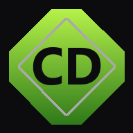
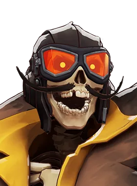
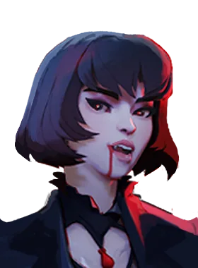
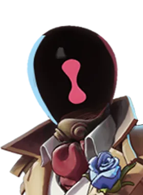

CENTRAL DEADLOCK Buscar no site
Caça-tanques
Tankbuster
49.3%win rate quando comprado
8.674.515compras registradas
3.200custo em almas
3tier
Carrega ao longo do tempo com dano espiritual adicional, fazendo com que habilidades que causam mais de 165 de dano causem dano adicional. Ignora a Resistência Espiritual.
Em quais heróis ele aparece

Deadman Danny — ver guia
Mina — ver guia
Paradox — ver guia Viscous — ver guiaBaseado nas builds mais usadas que o site baixou do jogo.
Números reais de partidas, via deadlock-api.com.